Inspection and Replacement of System Vacuum Tubing
Procedure
Provide instructions to inspect and replace the 12mm system vacuum tubing in the event that the incorrect tubing was installed during assembly.
Background
During the original assembly of the Panther Systems, some units were shipped with incorrect vacuum tubing installed.
The wall thickness of the suspect tubing was too thin and could allow the tubing to collapse during use.
Some, but not all, systems between serial numbers 875 and 1115 could be affected.
This procedure need only be performed on systems that exhibit low vacuum caused by collapsing tubing.
A system with the thin wall tubing may remain in service, as is, if the tubing is not collapsing and causing a low vacuum condition. There have been no reports of system failure due to tubing collapse at this writing, but a retrofit tubing kit is available should replacement be required.
The wall thickness of the correct tubing is 3mm. The wall thickness of the incorrect tubing is 2mm.
Parts and Materials Required
- Panther Vacuum Tubing Kit
- Tube Cutter
- Diagonal Wire Cutter
- 4mm Hex Wrench
- 3mm Hex Wrench
- Philips Screw Driver
- Flat Head Screw Driver
- 8mm Socket Driver or Wrench
- Measuring Tape
- Felt Tip Marker
- Adhesive Tape
- Container of Hot Water (Optional)
Time Required
- 4 Hours
Procedure
Inspection
 The incorrect tubing is thinner walled tubing than is recommended for the vacuum system. Both samples of tube are 12mm ID, but the incorrect tubing has 2mm walls rather than 3mm walls. The outside diameter of the correct tubing is 18mm, the incorrect tubing will measure 16mm OD. However, it is difficult to measure the exact outside diameter of the tube as it is often deformed during use and not perfectly round. Therefore, it may be necessary to remove a connector and measure the actual wall thickness. Also, if the existing tubing shows extreme deformation (flattening) during use, this would indicate it is the incorrect tubing. Replacement of vacuum tubing should only be undertaken when there is an actual vacuum pressure issue caused by collapsed tubing.
The incorrect tubing is thinner walled tubing than is recommended for the vacuum system. Both samples of tube are 12mm ID, but the incorrect tubing has 2mm walls rather than 3mm walls. The outside diameter of the correct tubing is 18mm, the incorrect tubing will measure 16mm OD. However, it is difficult to measure the exact outside diameter of the tube as it is often deformed during use and not perfectly round. Therefore, it may be necessary to remove a connector and measure the actual wall thickness. Also, if the existing tubing shows extreme deformation (flattening) during use, this would indicate it is the incorrect tubing. Replacement of vacuum tubing should only be undertaken when there is an actual vacuum pressure issue caused by collapsed tubing.
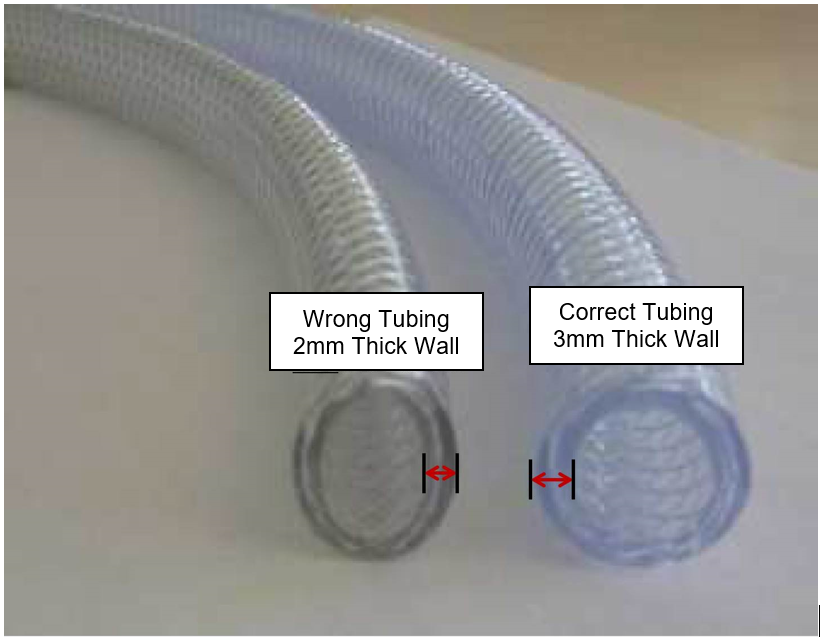
Replacement
- Remove the solid and liquid waste from the Panther system and dispose of it following proper laboratory procedures.
- Remove the right and left access panels by opening and lifting them off their hinges.
- Remove the front drawer cover from the Waste Drawer and the Computer Bay Door by removing the mounting screws.
- Set all covers aside.
- Disconnect all power and remove the Dell Workstation from the Panther and set aside in a safe location.
 Remove the vacuum filter and the short sections of tubing that connect it. Save the small sections of tubing to be reused during installation of the new filter.
Remove the vacuum filter and the short sections of tubing that connect it. Save the small sections of tubing to be reused during installation of the new filter.
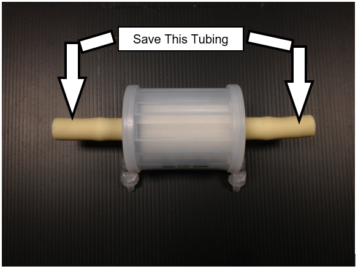

Note—Place the used filter on a bench pad, or dispose if to be replaced. - Open the Upper Bay access doors.
- Remove the clear Pipettor shield by removing its two screws and lifting out of the mounting slots.
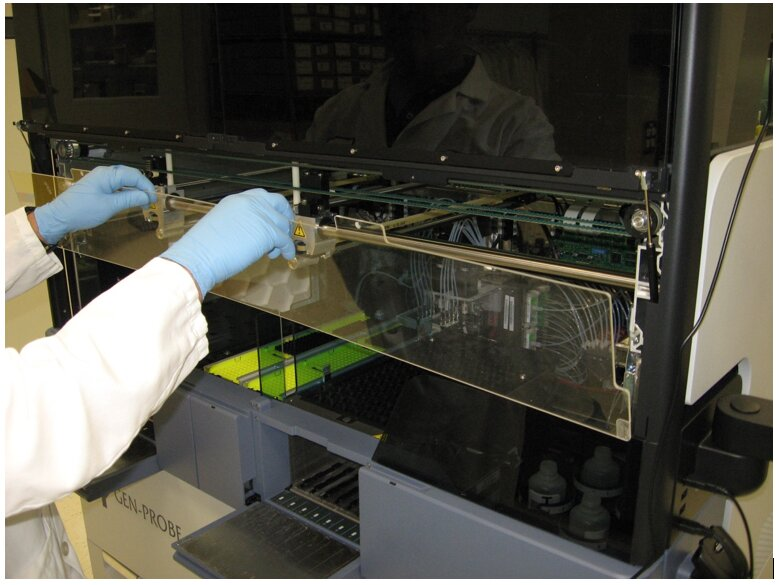
- Set the cover on clean bench pads out of the way.
- Cover the Upper Bay with bench pads to protect Reagent Bay, Sample Bay, Tip Tray, and TCR Target capture reagent—An assay-specific reagent added as part of specimen pipetting. Carousel from damage and contamination.
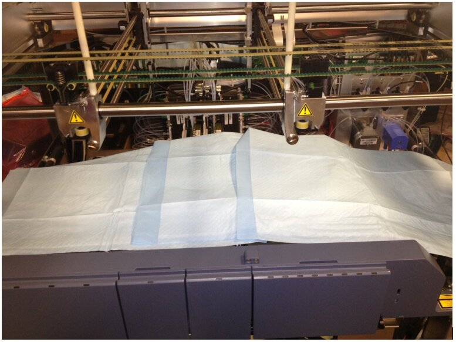
- Raise both Pipettors and move them to the left side of the system out of harm's way.
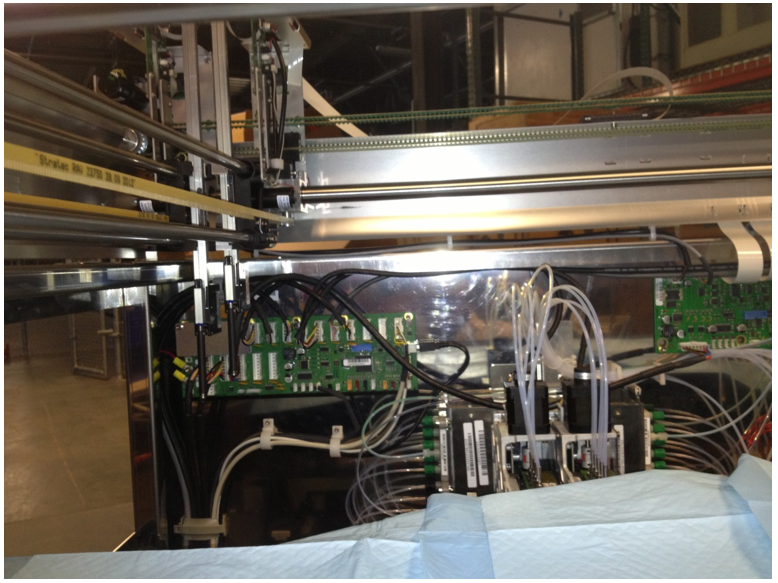
- Disconnect the Vacuum Manifold pressure sensor hose from the pressure sender.
- Place bench pads below the Vacuum Manifold and Pump Module to collect any drops and disconnect both Wash (green stripe) and both Oil (black stripe) lines leading to the MagWash modules at their respective splitters mounted on the Pump Module.
Note—The hose locations may differ from the image below. 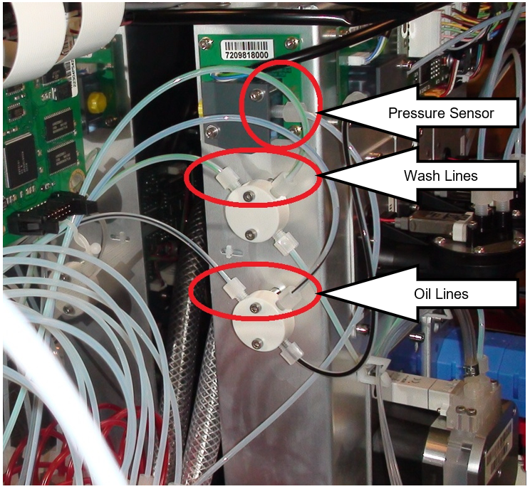
- Remove the 2 blue pump covers from the Peristaltic pump, allow fluid to drain back to the bottles.
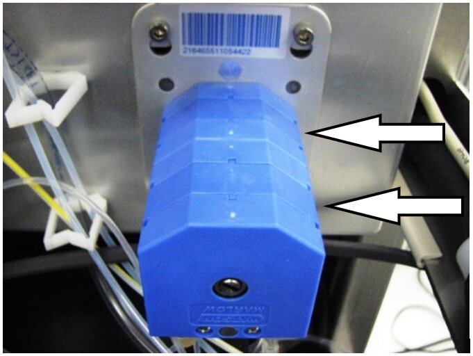
- Disconnect the Bleach and Buffer lines from the input side of the Peristaltic pump after the fluid has drained back into the bottles.
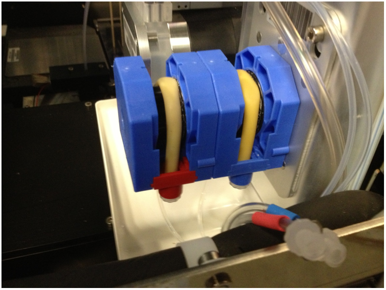
- Remove the Output Queue Injector Housing by disconnecting the communication line and loosening the thumb screw.
Note—Move the Injector and Housing out of the way. 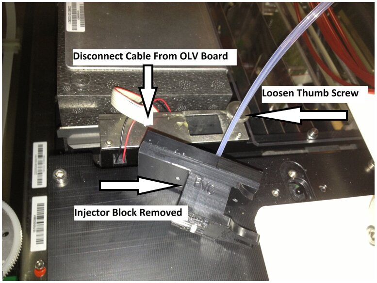
- Unscrew the 10 White MagWash aspiration lines from the Vacuum Manifold.
- Remove the 5 Red Output Queue aspiration lines form the Vacuum Manifold by carefully pulling them off their barbed fittings.
Note—The barbed fittings are delicate and can be easily broken. 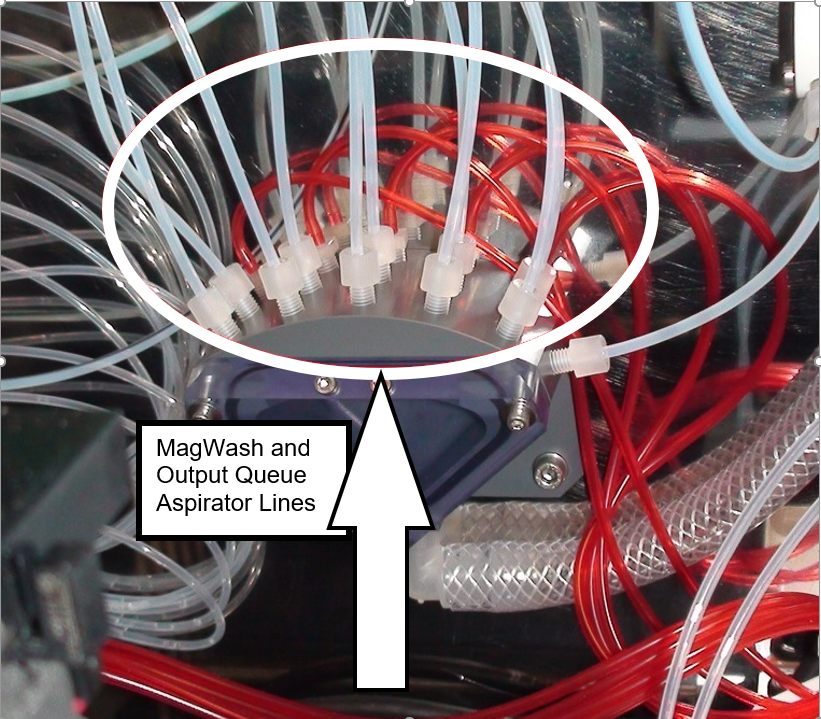
- Loosen the 2 screws on the top of the Pump Module.
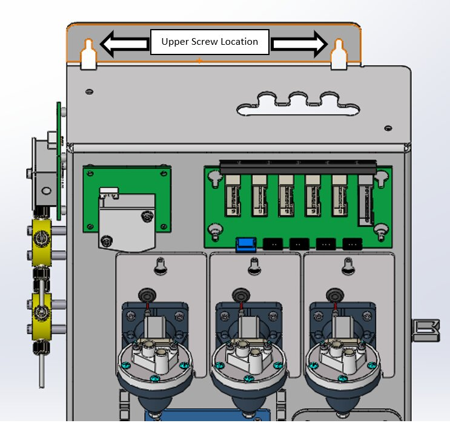
- Loosen the 1 screw under the Pump Module.
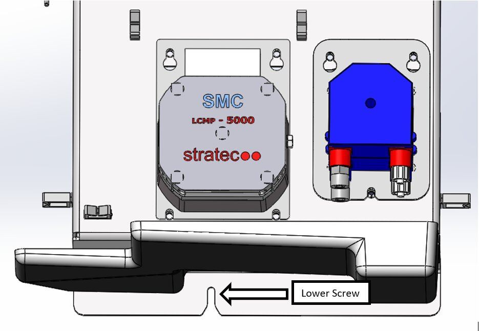
- Life the Pump Module to free it from the mounting screws and carefully set forward. This should provide space to pull the new hose through.
Note—Be careful to not damage the Ambient Temperature Sensor located on the bottom of the Pump Module. - Remove the 2 screws that mount the Vacuum Manifold to the rear of the Panther.
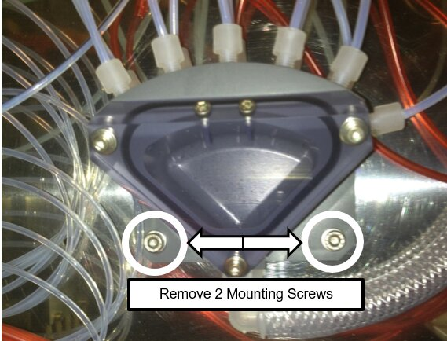
- Cut the vacuum tubing at the end of the 90° fitting as shown in the picture below.
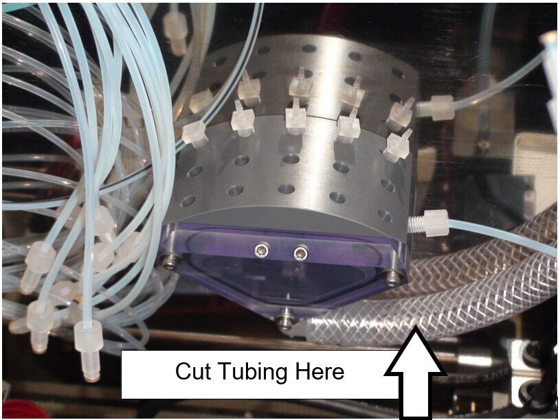
- Remove the Vacuum Manifold
- Remove the remaining tubing from the vacuum manifold fittings.
Note—Remove the remaining tubing by cutting a wedge from the upper end of the tube with diagonal cutters (shown below). Take care to not damage the fitting. 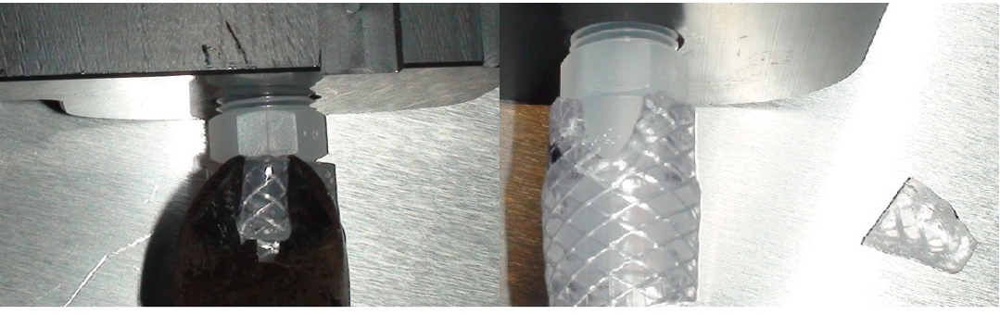
- Set the Vacuum Manifold aside.
- Open the Waste Drawer.
- Remove the 2 screws that mount the waste bottle manifold and quick connectors with a 4mm Hex driver.
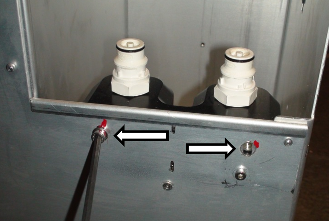
- Cut the 2 vacuum hoses just below the barbed fittings with hose cutters.
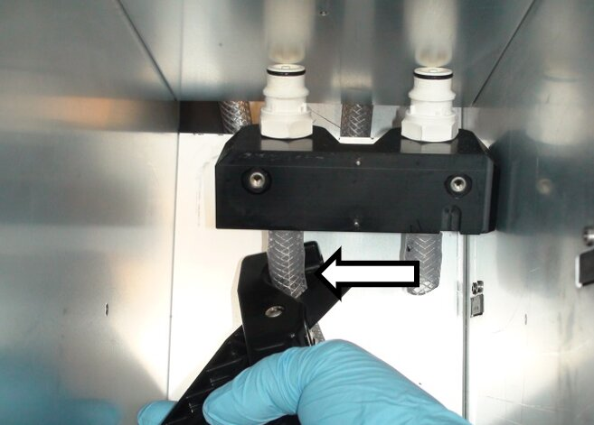
- Remove the manifold.
- Remove the remaining tubing from the manifold.
- Set the manifold and hardware aside.
- Open the Waste Drawer.
Note—It may be helpful to block the drawer open by placing a box or similar item between the drawer and Panther to keep the drawer open. - Remove the spiral wrap from around the two vacuum hoses leading away from the rear of the Waste Drawer.
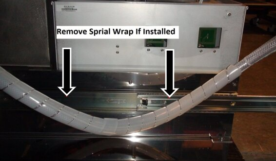
- Remove the brackets that clamp the vacuum hose to the rear of the Waste Drawer.
- You can remove on screw and loosen the other screw from each clamp and allow it to hang out of the way.
- Note how the sensor wires are routed through the drawer and along the vacuum hoses as they will be reinstalled in the same location.
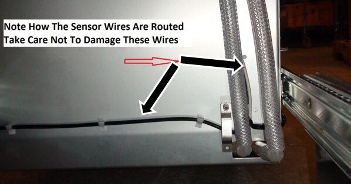
- Pull the 90° elbows away from the drawer a few inches and cut the vacuum hose on both sides of the elbows. Take extra care not to cut the two sensors that are attached to the vacuum hose by nylon cable ties.
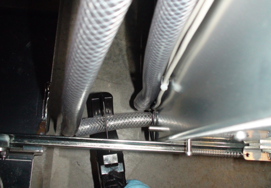
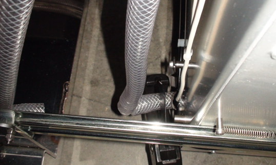
- Remove the two elbows and remove the stubs of hose from all barbed fittings, and set the elbows aside for now.
- Lift the Waste Drawer off the fronts clips that connect it to the drawer slides with a flat head screwdriver.
- Lift the front of the drawer up and block it with a small box or appropriate item so you may access the underside.
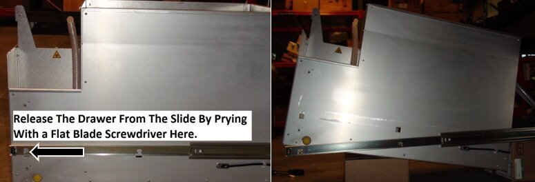
- Use a Philips screwdriver to remove the 3 screws that mount the vacuum coalescing bottle to the inside of the drawer.
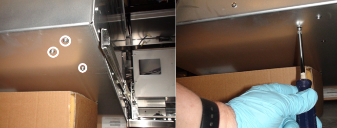
Note—The vacuum coalescing bottle may leak a small amount of retained fluid. - Cut the tubing or slide it off the barbed fitting on the bottom of the coalescing bottle.
- Remove any remaining stubs of hose from the coalescing bottle, empty any retained fluid in a proper waste container and set the bottle aside for now.
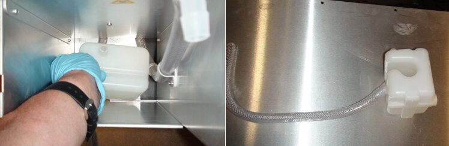
- Use an 8mm wrench to remove the 2 nuts and clamps that retain the vacuum tube to the drawer next to the coalescing bottle.
- Cut the 90° elbow from the tube, and remove the stub of vacuum hose from the elbow and set the elbow aside for now.
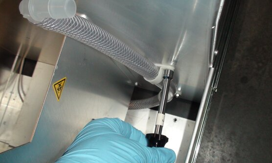
- At this point all the tubing in the waste drawer should be loose and can be removed and discarded.
Note—Save any fitting or hardware that remains for re-installation of the new hoses. - Snip the nylon cable ties from the vacuum tubing leading away from the waste drawer. Be careful to not cut the 2 sensor wires.
- Remove the 2 hose clamps that secure the vacuum hoses to the rear of the system. Save the clamps and hardware for installation of the new hose.
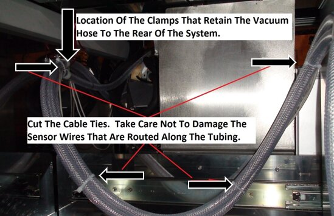
Note—Do not remove the vacuum hose that leads up through the frame to the vacuum manifold until instructed to do so. This tubing will be used to pull the new tubing through the frame. - From the right side of the Panther System, release the vacuum pump clamp and carefully slide the pump forward to provide access behind it.
Note—It may be necessary to disconnect the power and control cables from the pump in order to slide it forward without stressing these wires. - Disconnect the vacuum hose from the vacuum pump, the hose should now be free and it may be removed from the system.
Note—The straight, dual barbed fitting removed in this step will be used with the new hose and will also be used to assist in pulling the manifold hose through the frame in a later step of this procedure. It should be retained. - Remove and save any fittings or hardware from this hose.
- The old hose may now be discarded.

Caution—Do not remove the hose leading up through the frame to the Vacuum Manifold; it will be used to pull the new hose. 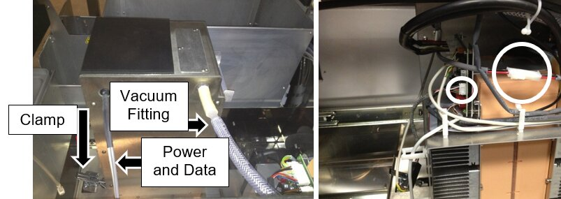
- Find the 300cm (130”) hose in the retrofit kit. Put a mark at 147cm (58”) from one end with a felt tip marker.
This mark will assist in locating the clamp at the rear of the cabinet in a later step. - Find the 220cm (87”) hose in the retrofit kit. Tape this hose to the 300cm hose in a neat coil on the marked end. The shorter hose should be on the inside of the curve. This will help to align the hoses so the Waste Drawer will close properly. The tape will be removed in a later step.
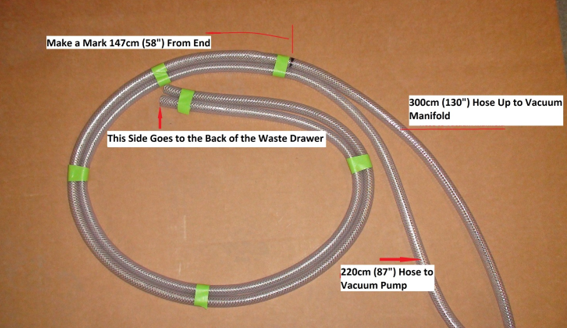
- Using the straight ½” dual barbed fitting taken from the vacuum pump in Step 49, temporarily attach the unmarked (loose) end of the new 330cm hose to the old hose leading up through the PANTHER frame to the Vacuum Manifold. By carefully pulling the hose from above and guiding it from below, you can pull the new hose through the frame using the old hose.
- Remove the barbed fitting and set aside after the new hose has been pulled through the system frame. The loose end will be attached to the Vacuum Manifold in a later step.
Note—Do not push the barbed fitting all the way into the tubing in this step. It will be removed after the tubing is pulled through the frame. These fittings are difficult to remove after they have been fully inserted. A bit of tape can be used to reduce the possibility the hose will separate from the barbed fitting. 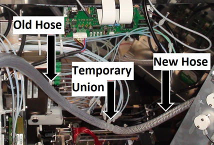
- Use the original hose clamps to loosely clamp the new vacuum hose to the rear of the system. The longer hose that leads up to the vacuum manifold should be in the upper clamp. Align the felt tip mark made earlier with the edge of the clamp. This may not be the exact final location for the hose, but will be quite close. The two sensor cables should be clamped along with the hose in the upper clamp.
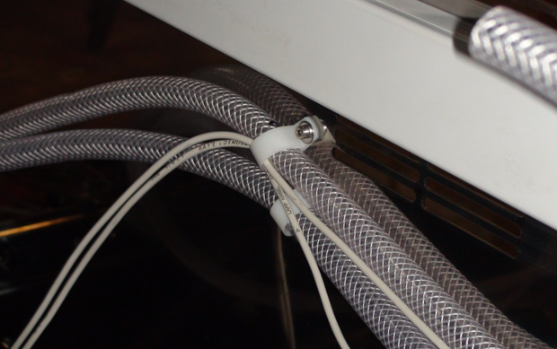
-
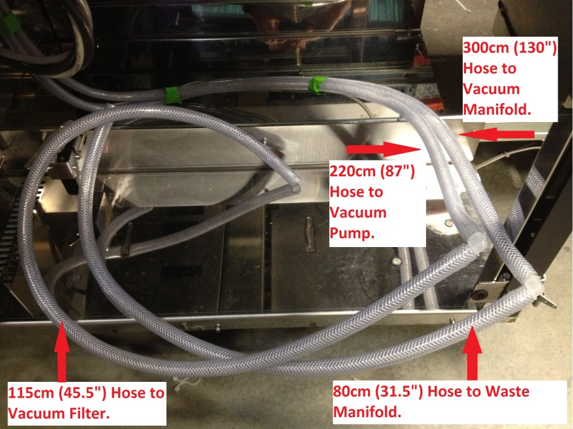
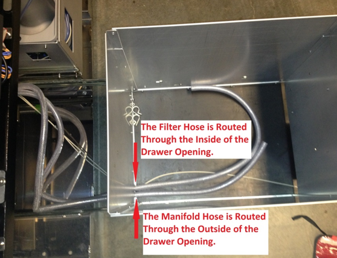
- Inside the drawer, align and attach the vacuum manifold line to the barbed fitting for the rear waste bottle quick connect on the waste bottle manifold. Connect the short, 48cm (19”) hose to the front barbed fitting of the waste bottle manifold and feed it under the raised platform in the waste drawer. Attach the end with the 45° cut to the coalescing bottle such that the 45° face sits flat against the coalescing bottle. Feed the 115cm (45.5”) hose up through the coalescing bottle bay.
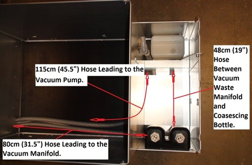
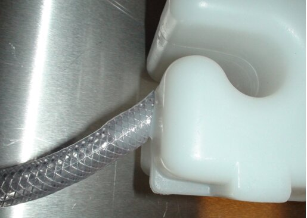
- Screw the coalescing bottle to the floor of the waste drawer with the three Philips screws removed earlier.
- The waste drawer may now be reinstalled on the drawer slides. The drawer mounts forward onto the rear slide clip and down onto the middle and front slide clips.
- Being careful to neatly route the sensor wires, clamp the two hoses to the rear of the waste drawer. Start with the clamp close to the mark made in step 29 and adjust as needed. The hoses should be routed such that the manifold hose is on the outside of the curve and the hoses will fold neatly against the rear of the system when the drawer is closed. Check that the drawer lock solenoid will properly lock the drawer and that the drawer doesn’t need to be held in position in order to lock. It may be necessary to adjust the position of the hoses in the clamps on the back of the system for the hose to fold neatly. The tape placed on the tubing earlier should help keep the two vacuum tubes together while connecting the fittings and clamps.
- Install the four tie wraps on the hose, being sure to neatly route the sensor wires along the hose. Remove the tape as the tie wraps are installed.
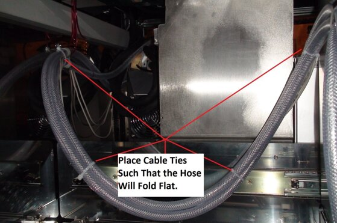
- Replace the spiral wrap (if used) after testing that the drawer closes. Test the drawer again and adjust the assembly as needed to allow the drawer to shut properly.
- Once confident that the hoses and cables are routed correctly and the drawer closes properly, tighten all clamps to keep the hoses from moving.
- Attach the vacuum filter hose to the inside of the waste drawer using the original clamps and nuts. Reinstall the 90° barbed elbow on the end of the hose. The hose should be routed such that it will lay flat on the floor of the drawer during use. Refer to the image in step 44 if needed.
- Install the old or new (if being replaced) vacuum filter on the coalescing bottle and vacuum line.
- Reattach the waste bottle manifold to the drawer using the two screws removed earlier. Check that the waste bottle mounts properly and adjust the manifold as needed for proper fit. Refer to the image in step 28 for proper location.
- Attach the vacuum manifold to the vacuum hose where it had been fed through the frame to the upper bay.
- Mount the vacuum manifold to the rear wall of the system with its two mounting screws. Route the excess hose neatly behind the Pump Module such that it won’t interfere with mounting the Pump Module and also won’t overly stress the elbow on the bottom of the vacuum manifold. It should not be necessary to cut the hose to make it fit if properly installed.
- Reinstall the Pump Module on its three screws and tighten them. Refer steps 19 and 20 for screw locations. Take extra care not to damage the Ambient Temperature sensor wire located on the bottom of the Pump Module.
- Reconnect the red Output Queue aspirator tubing to the vacuum manifold keeping in mind that the barbed fittings are fragile and easily damaged. Reconnect the MagWash aspirator tubing such that they are routed neatly from their modules to the vacuum manifold. Refer to the image in step 18.
- Reconnect the wash and oil lines to their proper splitters. Connect the vacuum pressure sensor line to the sensor module. Refer to the image in step 13 for proper locations.
- Reconnect the bleach and buffer lines to the peristaltic pump and replace the pump covers. Refer to step 15.
- Reinstall the Output Queue Injector block and its ribbon cable.
- Neatly route and connect the pump hose to the vacuum pump using the original barbed fitting.
- Reconnect the Vacuum Pump power and communications lines if they were disconnected.
- Reinstall the clear Pipettor safety cover in the upper bay.
- Reinstall the drawer covers and the side doors. Check that the drawers close correctly and adjust the drawers as needed.
- Replace and reconnect the Dell workstation.
- Attach the power cables to the computer and Panther.
- The Panther GUI will need to be started prior to the waste bag being replaced or the system will not correctly inventory the waste count. Replace the waste bag.
Verification
- Power on the Panther System and PC.
- Log in to the FSE shield.
- Open the Service Software.
- Initialize the Vacuum.
- Activate the Vacuum & Read the Vacuum pressure.
- Verify the vacuum is within specifications.
The vacuum level must read between -203mbar and -270mbar and the vacuum pump speed must read above 1650rpm.
If needed refer to Configuring the Quad Head Vacuum Pump Speed. - Exit Service Software.
- Start Panther Main.
- Check Vacuum in Panther Main.
- Prime Operation of pumping fluid through tubing to ensure proper and consistent fluid delivery (remove air from the tubing, etc.). the system.
- Verify the Vacuum is within Specification:
- Maintains a vacuum level between 6inHg and 8inHg.
- Verify that exhaust is flowing through the rear vent (serial #00281 and higher) or through the routed tubing (serial #00280 and lower).
- Shutdown and restart the Panther System and PC in Customer Mode and return to customer.
 button at the top of the page to send feedback, comments, or change requests.
button at the top of the page to send feedback, comments, or change requests.